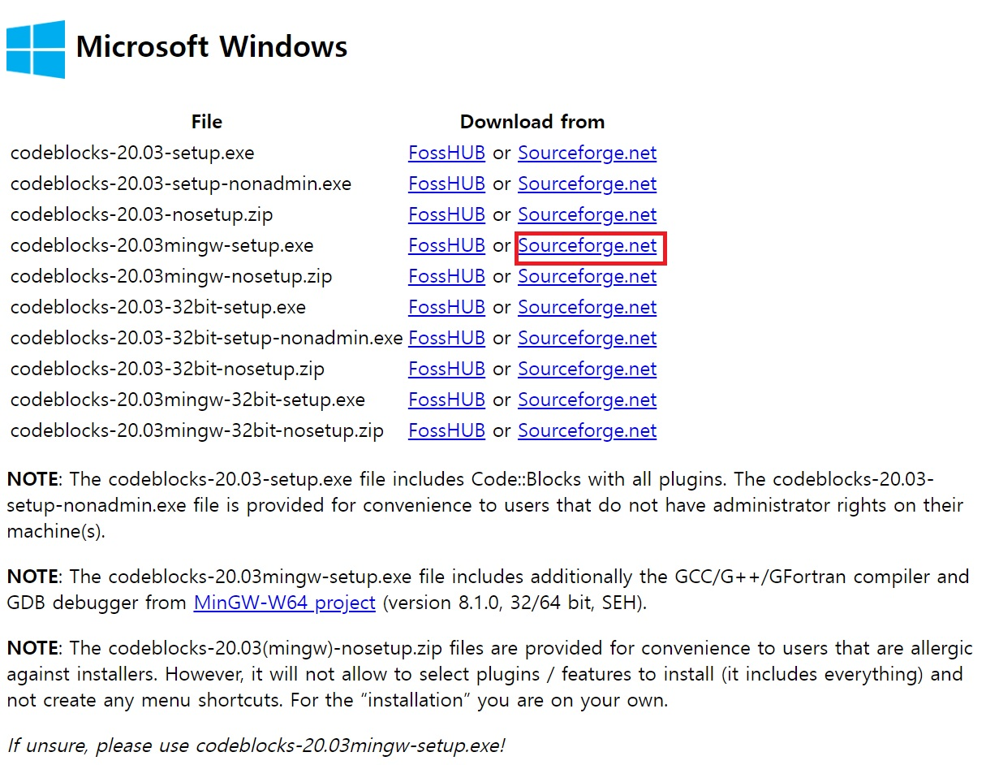
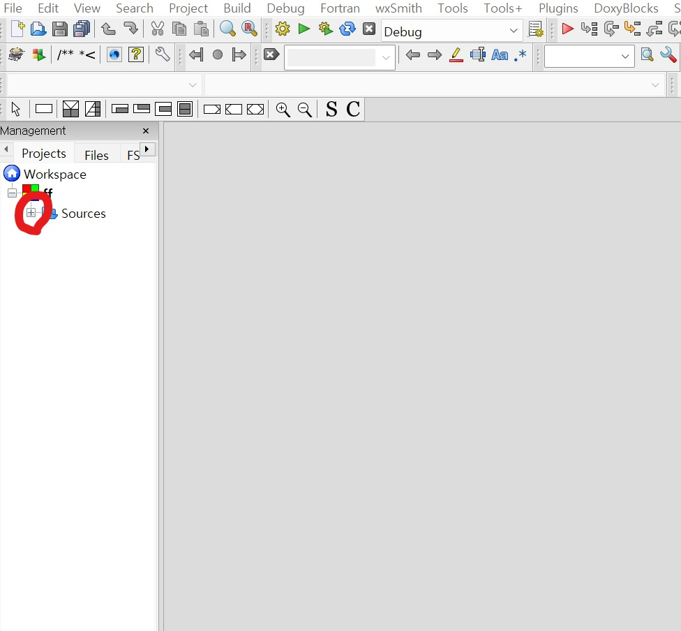
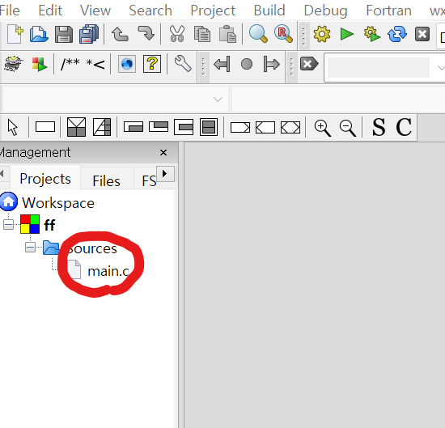
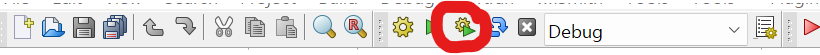

프로그램다운로드
1. http://www.codeblocks.org/downloads/binaries/ 에 접속
2. 사진의 mingw-setup.exe의 sourceforge.net을 누름

3. 다른창으로 넘어가서 5초정도 기다리면 다운로드
4. 프로그램을 열어서 하단의 next와 install연타
5. 약 3분정도 기다리면 나오는 do you wnat to run Code:Blocks now? 메시지에서 예를 선택
앱 내 세팅
6. 좌측 상단 FIle메뉴에서 new>project를 누르고 나온 창에서 console applicaton 선택 후 Go누르기
7. C를 Next선택 (C++ 코딩시 C++선택) , project title란에 프로젝트 이름, 바로 아래칸에 저장할 경로 선택, next , finish
8. source 옆에 + 클릭, 밑에 생성된 main.c를 더블클릭-> 파일생성 & 코딩 준비 완료


9. 코딩 후에는 톱니바퀴와 시작버튼이 같이있는 build and run 버튼 클릭시 cmd창에서 실행됨

*** 맥에서 C언어 프로그램을 다운로드하는 방법은 C++ 강좌를 참고 ***
*** C언어와 C++은 매우 비슷한 언어이기 때문에 C++의 팁 부분도 참고 ****